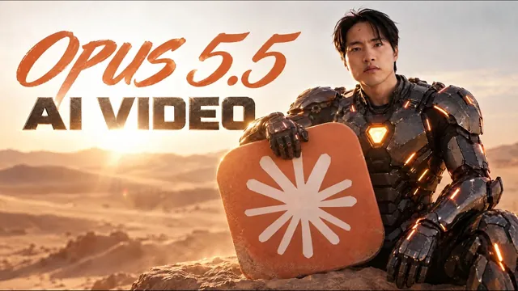

Claude Opus 5.5로 AI 영상 한 단계 끌어올리기

원본 영상 보기 →
- AI 영상의 약점은 영상 품질이 아니라 글자 통제예요
- 영상 모델과 Claude Opus의 역할을 나누면 결과물이 정확해져요
- Claude 안에서 생성부터 효과음까지 이어져요
한 줄 요약
Tao Prompts는 AI 영상이 모션 그래픽 속 글자와 오버레이를 정밀하게 다루지 못한다고 봐요. 그래서 글자 없는 영상을 먼저 만들고 그 위에 Claude Opus 5.5가 코드로 그래픽과 효과음을 얹는 작업 순서를 보여 줍니다.
전체 내용 정리
AI 영상은 효과에 강하지만 글자와 오버레이는 통제하기 어려워요
Tao Prompts는 AI 영상이 시각 효과에서는 훌륭해도 모션 그래픽, 글자, 오버레이처럼 세밀한 요소를 정밀하게 통제하는 데는 약하다고 말해요. 화면 곳곳에 디테일이 떠 있는 장면일수록 더 그렇다는 거죠.
이 약점을 메우는 도구가 Claude Opus 5.5입니다. Tao Prompts에 따르면 Claude Opus는 코드를 써서 모션 그래픽의 모든 요소를 아주 정밀하게 통제하는 일에 강해요. 여기에 AI 영상 생성 모델을 더하면 결과물을 훨씬 세밀하게 쓸 수 있다는 게 이 영상의 출발점입니다.
Tao Prompts가 두 도구를 합쳐 만든 예시는 세 가지예요. 첫째는 지도 위에서 여행 경로가 도시에서 도시로 이어지는 장면입니다. 새 도시에 닿을 때마다 랜드마크의 홀로그램이 떠오르면서 그 도시의 수치를 설명하는 글자 주석이 함께 나타나요.
둘째는 HUD 화면과 글자, 그래픽 오버레이를 잔뜩 올린 장면입니다. Tao Prompts 스스로도 좀 과하게 넣었다고 말하는데, 영상을 멈추고 글자를 읽어 보면 전부 의미가 있는 문장이에요. 셋째는 돈이 어떻게 움직이는지 설명하는 explainer 영상입니다. 작은 주석과 텍스트 효과가 모두 AI 영상에 Claude Opus 5.5를 합쳐 만든 것이에요.
같은 장면을 AI 영상만으로 만들면 어디서 틀어질까요?
Tao Prompts는 첫 번째와 세 번째 예시를 Claude Opus 없이 AI 영상만으로 다시 만들어 비교해 봤어요. 지도 장면은 대략적인 분위기까지는 따라가는데 내용이 틀렸습니다. 선은 런던에서 출발해 파리로 가야 하는데 스페인에서 시작했거든요. 홀로그램이 뜨는 디스플레이의 글자도 사실상 알아볼 수 없는 문자였어요. 홀로그램 자체는 멋있지만 이런 애니메이션에 필요한 정밀한 통제는 없었다는 평가입니다.
HUD 장면도 같은 문제가 생긴다고 봐요. AI 영상만으로 만들면 글자는 의미 없는 문자가 되는 데다 이렇게 많은 오버레이를 동시에 움직이기도 어렵다는 거죠.
흥미로운 건 explainer 영상 쪽이에요. AI 영상만으로 만든 결과물은 겉으로 보면 괜찮았고 영상 자체에는 문제가 없었습니다. 문제는 프롬프트를 열어 봐야 보여요. 화면에는 digital payments라고 나오는데 프롬프트에 적은 문구는 it then goes digital이었어요. 7초 지점에 뜬 global across borders도 프롬프트에는 connected across borders로 적어 둔 문구였습니다.
Tao Prompts의 결론은 글자 하나까지 맞아야 쓸 수 있는 결과물을 만들 때 AI 영상만으로는 정밀한 통제가 아직 모자란다는 것입니다.
글자 없는 영상을 먼저 만들고 그 위에 그래픽을 얹어요
Tao Prompts가 쓰는 작업 순서는 단순해요. 먼저 글자와 주석이 없는 평범한 AI 영상을 렌더링합니다. 그다음 Claude Opus가 그 영상을 분석해 그래픽, 주석, 글자를 위에 겹쳐 올려요. 효과음도 Claude Opus가 넣을 수 있어요. Tao Prompts가 본 바로는 AI로 얻을 수 있는 효과음 중 가장 좋은 편이라고 합니다.
영상 제작에는 Artlist(AI 이미지와 AI 영상 생성 도구를 모아 둔 플랫폼)를 써요. 다만 Claude와 이어 줘야 도구들을 한곳에서 엮을 수 있으니, Artlist MCP(Claude와 외부 서비스를 이어 주는 연결 방식)를 사용합니다. 연결하면 AI 영상을 Claude 안에서 바로 생성할 수 있어요. Claude가 파일 정리부터 기준 이미지 생성, 영상 애니메이션, 모션 그래픽 얹기까지 계획을 짤 수 있어요.
연결한 뒤 Tao Prompts가 Claude에 입력한 순서는 이렇습니다.
- 만들고 싶은 것을 설명합니다. 대략 이런 요청이에요. "Artlist 같은 AI 영상 생성기와 Claude Opus 5.5가 만드는 모션 그래픽 애니메이션을 함께 쓰는 영화 같은 장면을 만들고 싶어요."
- 본인 사진을 올리고 장면을 설명한 다음, 그 장면에 들어갈 세 컷의 기준 이미지를 먼저 만들게 해요. 이 이미지들이 나중에 AI 영상이 됩니다.
- 결과가 그다지 사실적이지 않았어요. 확인해 보니 Claude가 예전 이미지 모델인 Nano Banana Pro를 쓰고 있었습니다. 그래서 새 이미지 모델인 GPT image 2.5(이미지 생성 모델)로 다시 생성하라고 요청해서 훨씬 선명하고 생생한 이미지를 얻었어요.
- 이 이미지들을 영상으로 바꾸게 합니다. 영상 모델은 Seedance 2.5를 1080p 해상도로 지정했어요. 위에 모션 그래픽을 올릴 수 있는 방식으로 애니메이션을 만들라고 했어요. 음악은 만들지 말고 일반적인 효과음은 괜찮다는 조건도 붙였습니다.
Claude Opus 5.5가 그래픽을 올리고 효과음까지 붙여요
영상이 나오면 Tao Prompts가 컷마다 어떤 그래픽을 원하는지 Claude에게 말해요. 거리를 걷는 첫 번째 컷에는 장소, 배경 상황, 연도를 설명하는 그래픽 디스플레이를 올려 달라고 했습니다. 얼굴을 클로즈업한 두 번째 컷에는 헬멧 안쪽에서 바깥을 보는 아이언맨 영화처럼 그래픽 오버레이를 넣어 달라고 했어요.
세 번째 컷은 로봇을 감지해서 확대하고 정보를 띄우고 발사하는 장면까지 오버레이를 넣으면 좋겠다고 영상을 보며 구상해요. 생성된 영상은 걷는 장면이라 큰 사건은 없어요. 클로즈업 컷은 진지하게 주변을 둘러보는 모습이었지만 그래픽을 얹기에는 충분하다고 봤습니다.
그래픽 작업은 약 30분 걸렸어요. 완성본을 본 Tao Prompts는 꽤 놀랍다고 했어요. 30분밖에 안 걸렸다는 점도 강조합니다. 각 텍스트를 일일이 지정하지 않았는데도 열어 보면 글자가 전부 정확하게 쓰여 있었어요.
빠진 건 오버레이에 맞는 효과음이었습니다. 이건 Claude에게 모션 그래픽과 오버레이 위에 효과음을 얹어 달라고 한 문장으로 요청해 해결했어요. 이 모든 과정이 Claude 안에서만 돌아갔어요. Tao Prompts는 어떤 파일도 직접 내려받지 않았다고 합니다.
같은 방식으로 앞서 본 explainer 영상도 만들었어요. 먼저 글자도 그래픽도 주석도 없는 원본 애니메이션만 생성한 뒤 그 위에 Claude Opus가 주석과 그래픽을 올렸습니다.
한계도 하나 짚어요. Claude Opus가 만든 애니메이션은 글자를 자세히 보면 프레임마다 조금 흔들릴 때가 있다고 합니다. 살짝 떨리고 꿈틀거리는 느낌이 난다는 설명이에요.
핵심 인사이트
- AI 영상의 약점은 영상 품질이 아니라 글자 통제예요: Tao Prompts가 AI 영상만으로 만든 explainer 영상은 겉으로는 괜찮아 보였습니다. 하지만 프롬프트에 적은 문구와 화면에 나온 글자가 달라서 그대로 쓰기 어려웠어요.
- 영상 모델과 Claude Opus의 역할을 나누면 결과물이 정확해져요: 글자 없는 영상을 먼저 만들고 Claude Opus가 그래픽과 글자를 코드로 얹으면 철자와 위치를 통제할 수 있습니다. Tao Prompts가 AI 영상만으로 만든 지도 장면에서는 경로의 출발지가 틀렸어요.
- Claude 안에서 생성부터 효과음까지 이어져요: Artlist MCP를 연결하면 기준 이미지 생성, 영상 변환, 그래픽 합성, 효과음 추가를 파일 내려받기 없이 한 대화에서 처리합니다.
- 지시는 단계별로 짧게 나눠도 충분해요: 이미지 모델 교체, 영상 해상도 지정, 음악 제외 같은 조건을 그때그때 한 문장씩 추가하는 방식으로 진행했습니다.
오늘 당장 해볼 것
- Claude에 Artlist MCP를 연결해 보세요. 연결하면 Claude가 이미지 생성과 영상 생성을 직접 맡고 파일 정리와 계획까지 세울 수 있습니다.
- 만들고 싶은 장면을 Claude에게 설명하세요. 본인 사진을 올린 뒤 "장면의 세 컷에 쓸 기준 이미지를 먼저 만들어 줘"라고 요청해 보세요. 결과가 어색하면 Tao Prompts처럼 GPT image 2.5 같은 다른 이미지 모델로 다시 생성하라고 말하면 됩니다.
- 이미지를 영상으로 바꿀 때는 모델과 조건을 명시하세요. Tao Prompts는 Seedance 2.5, 1080p, 모션 그래픽을 올릴 수 있는 구성, 음악 없음, 일반 효과음 허용이라는 조건을 줬어요.
- 영상이 나오면 컷마다 올릴 그래픽을 말로 설명해 그래픽 합성을 시키세요. 첫 컷에는 장소와 배경 상황과 연도를 알리는 디스플레이, 클로즈업 컷에는 아이언맨 헬멧 안쪽 같은 화면처럼 구체적인 분위기를 주면 됩니다. 글자 내용은 맡겨도 정확하게 쓰였다는 게 Tao Prompts의 경험이에요.
- 마지막으로 "모션 그래픽과 오버레이 위에 효과음도 넣어 줘"라고 요청해 보세요. 완성본에서 글자가 프레임마다 흔들리는지도 같이 확인해 보면 좋습니다.